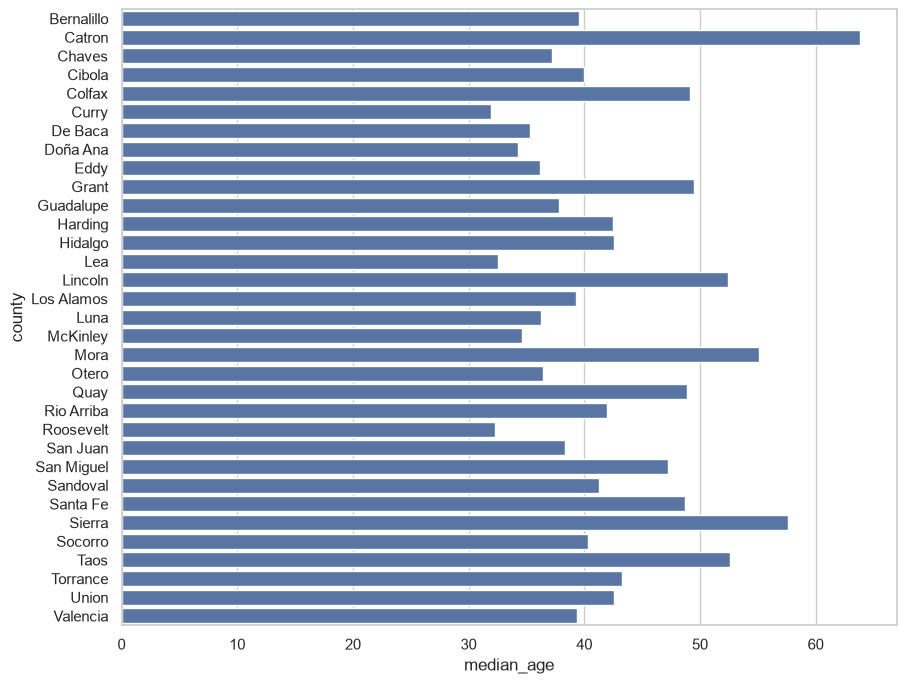
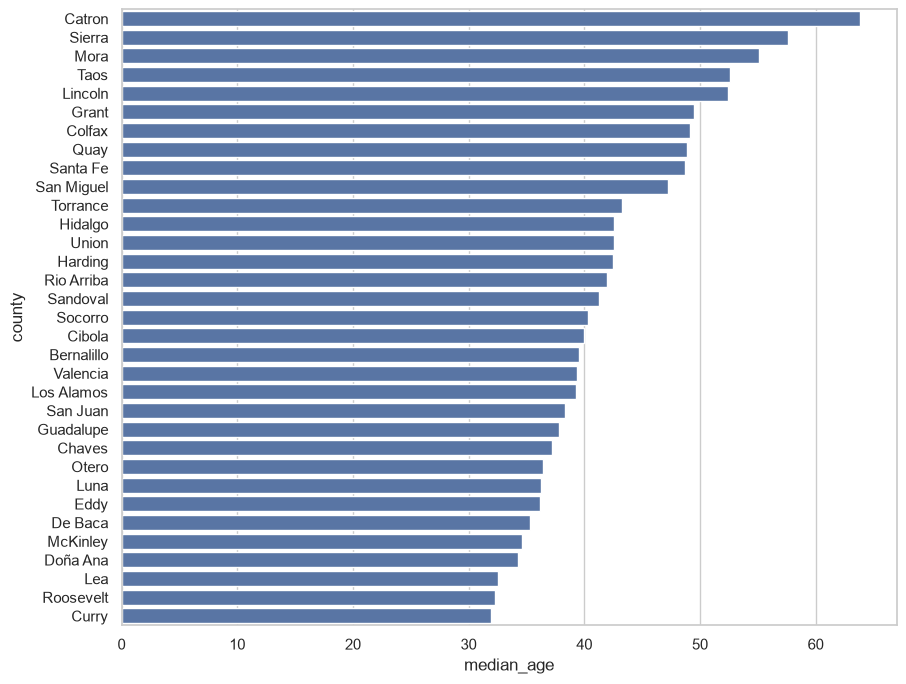
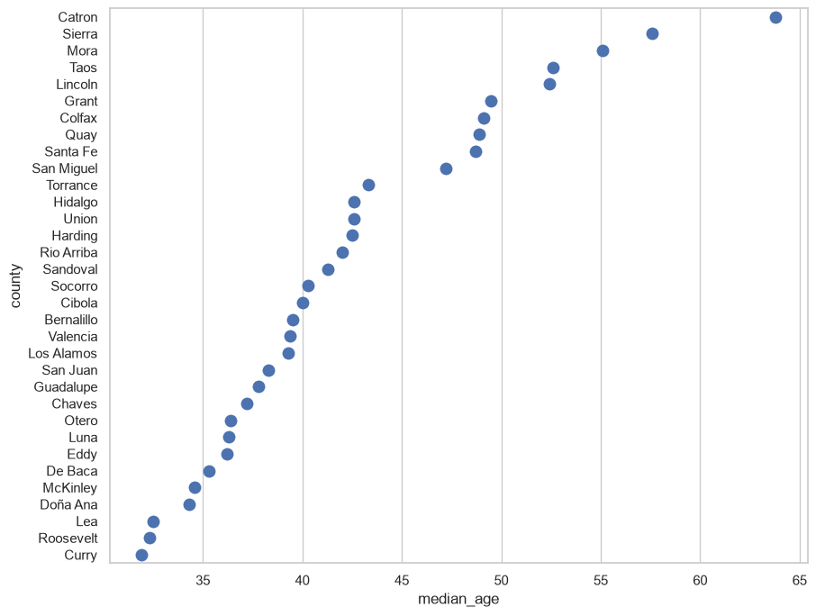
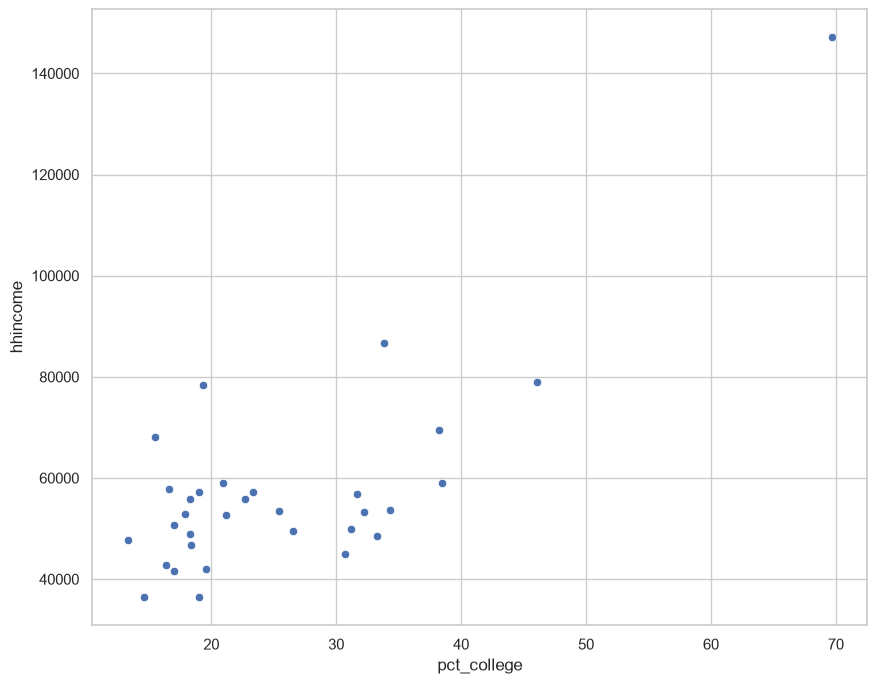
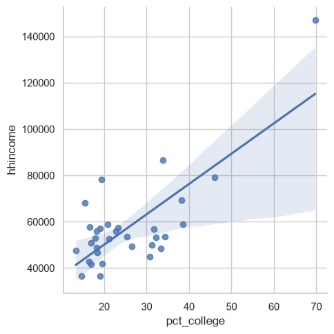
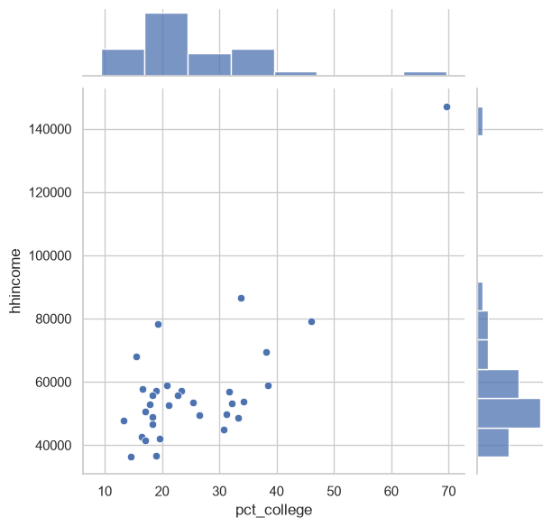
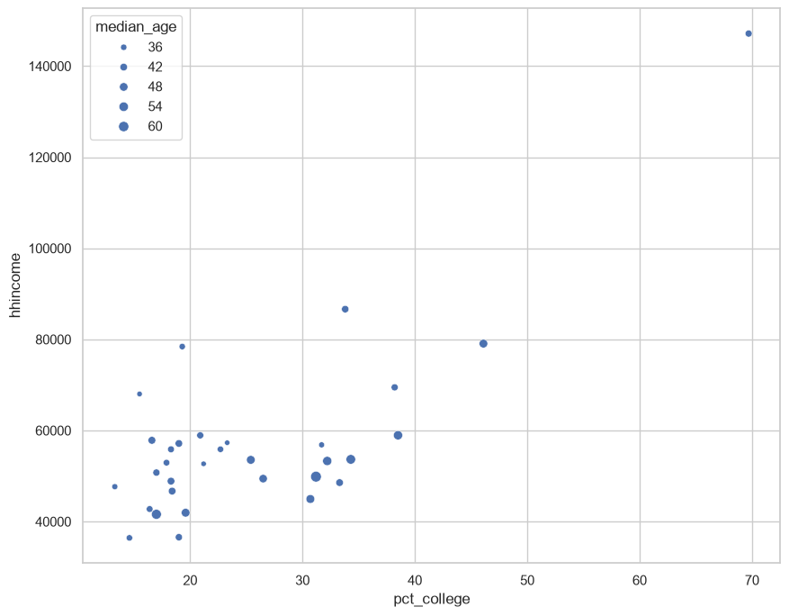

In Assignment 3, you got a feel for the basic analytic capabilites of pandas and seaborn, and learned how to calculate descriptive statistics and generate univariate plots. In many cases, however, you are going to want to explore interrelationships between multiple characteristics of your data. In this course, we are going to address this with multivariate exploratory visualization.
Multivariate visualization can take a lot of forms, and can get quite complex! We’re just going to start with the basics here and work our way up to more complicated visualizations - and fortunately seaborn can do quite a lot of things.
Our data for today’s notebook are going to come from the 2020-2024 American Community Survey. The American Community Survey, or ACS, is an annual survey conducted by the US Census Bureau that covers demographic characteristics of the US population such as income, education, and much more.
To get started, download the required data for this assignment (new_mexico.csv) from the course GitHub repository, then upload the data to Colab. Run the cell below to load the required packages and data for this assignment, which are for counties in New Mexico.
import pandas as pdimport seaborn as sns# Assumes the data are in local session storage; # modify if the data are in your Drivenm = pd.read_csv("new_mexico.csv")nm.head()
county
hhincome
pct_college
median_age
0
Bernalillo
69473.0
38.2
39.5
1
Catron
49864.0
31.2
63.8
2
Chaves
52938.0
17.9
37.2
3
Cibola
50759.0
17.0
40.0
4
Colfax
53554.0
25.4
49.1
We note that our dataset has four columns: "county", for the county name; "hhincome", which refers to the median annual income for households in the county; "pct_college", which refers to the percent of the population age 25 and up with at least a 4-year degree; and "median_age", which refers to the median age of county residents.
Bar charts and dot plots
Two common types of charts for comparing quantities, as we discussed in class, are bar charts and dot plots. Bar charts represent values as proportional to the height of bars, and dot plots represent values as dots along a given axis.
Many plot types are available in pandas through the built-in .plot() data frame method, and also have equivalent functions in seaborn. In pandas plotting, if no data arguments are passed to the plot method, pandas will assume that the x-axis values are in the index, and then will plot numeric columns as data series. For example, we can create a bar plot below. Also notice the use of the sns.set() function. Within seaborn, you can choose from a variety of built-in plot templates: "white", "dark“, "darkgrid", "whitegrid", and "ticks", and you can use the set function to make all of your plots in this particular style.
Additionally, we can modify underlying figure characteristics with the rc parameter in sns.set(). This allows you to specify the output figure width and height in inches; the code below will tell seaborn to make 10 inch by 8 inch plots, which will be more legible than the defaults.
As we’ve covered in class, seaborn is an excellent choice for creating publication-quality plots with a minimum of code. Bar charts in seaborn are available from the barplot function. The function has a lot of optional parameters; however, to get a bar chart to display, all you need are columns to map onto the x and y axes, and a dataset you’d like to plot. Let’s try a horizontal bar plot with the county name on the y-axis and median age on the x-axis:
sns.barplot(x ='median_age', y ='county', data = nm)

Looks good! There is much more you can do with the plot - customizing colors, axis labels, and beyond. We’ll be addressing plot customization beginning in Week 11. However, there are still some small things that we can do to make our plots more readable. Recall from class our discussion of the .sort_values() data frame method, in which we can arrange our data based on one or more column values. When creating bar charts, it is a good idea to show sorted data values, which makes it easier for the reader to make comparisons.
We have a few options here. We could sort our data frame in place, then supply it to the data parameter of barplot:
nm.sort_values('median_age', ascending =False, inplace =True)sns.barplot(x ='median_age', y ='county', data = nm)
We could create a new sorted data frame from the sort operation and use it instead:
nm_sorted = nm.sort_values('median_age', ascending =False)sns.barplot(x ='median_age', y ='county', data = nm_sorted)
Or, we could tell seaborn to work with a sorted data frame within the function call.
sns.barplot(x ='median_age', y ='county', data = nm.sort_values('median_age', ascending =False))
All of these will work. Recall that the sort method takes either a single column or a list of columns, and defaults to sorting in ascending order; if you want descending order you will need to tell the method ascending = False. Let’s try the second option I discussed.
nm_sorted = nm.sort_values('median_age', ascending =False)sns.barplot(x ='median_age', y ='county', data = nm_sorted)

Sorting the data allows us to more clearly see how the values vary. However, as we discussed in class, it is essential that bar charts have an origin of 0, as bar heights are used to make comparisons. For values that are similar - but for which the differences are still significant - the dot plot may be preferable, which represents values by the position of dots along a a value axis. Indeed, many data visualization experts prefer dot plots to bar charts, as they argue that it is easier for humans to perceive dot position instead of bar heights. Further, dot plots are not constrained by the zero-axis-origin rule.
Dot plots in seaborn are available via the stripplot function; for reference, “strip plot” is another name for dot plot. The syntax you’ll use is identical to barplot in this example aside from a size parameter that governs the size of the points on the plot.
sns.stripplot(x ='median_age', y ='county', data = nm_sorted, size =10)

Scatter plots
Bar charts and dot plots are excellent choices for visualizing quantitative variations amongst different categories, like countries. However: what if you want to visualize how two quantitative attributes might covary? The most common exploratory visualization technique for this type of scenario is the scatter plot.
Scatter plots most closely resemble the base Cartesian coordinate system that underpins the charts we’ve learned how to make to this point. In fact, scatter plots are likely familiar to you from grade-school mathematics in the way they represent the joint distributions of two attributes. The value for one attribute is represented by the x-coordinate (the horizontal axis) on the chart, and the other attribute is represented by the y-coordinate (the vertical axis).
Let’s give this a try. We’ll be comparing the distributions of counties’ educational attainment, as measured by the percentage of residents age 25 and up with at least a 4-year college degree, and the median annual income for households in New Mexico’s counties. Briefly, let’s examine the characteristics of our data.
nm.describe()
hhincome
pct_college
median_age
count
32.000000
33.000000
33.000000
mean
57493.187500
25.127273
42.448485
std
20025.720607
11.743729
7.821809
min
36419.000000
9.300000
31.900000
25%
48331.750000
17.900000
36.400000
50%
53428.500000
20.900000
40.300000
75%
58114.750000
31.700000
48.700000
max
147139.000000
69.700000
63.800000
You can get a sense here of the wide variations among counties. Median household income varies from $36,419 to $147,139; the percentage of residents age 25+ with a 4-year degree varies from 9.3 percent to 69.7 percent. Notice that the count for hhincome is 32, not 33: one county (De Baca, population under 2,000) has no income estimate, because the Census Bureau does not publish estimates it considers too unreliable. pandas shows this as NaN and skips it when calculating statistics.
So how do these two distributions of values covary? We can draw a scatterplot with seaborn:
sns.scatterplot(x ='pct_college', y ='hhincome', data = nm)

Notice the shape formed by the distribution of dots. It appears from our plot that as educational attainment increases, household income increases as well, suggesting a positive relationship between the two distributions. Recall from class that this statistical relationship can be quantified with a correlation coefficient. Let’s check this out by using the .corr() method available to us in pandas:
nm['hhincome'].corr(nm['pct_college'])
np.float64(0.7568878523235685)
As we discussed in class, Pearson’s correlation coefficient (which is used here) ranges between -1 and +1, with positive values suggestive of a positive correlation and vice versa. This statistic conforms with what we see in the scatter plot. However: remember to beware of spurious correlations! We’ll learn some more methods for investigating this graphically throughout the semester.
Scatter plots are also available in seaborn with additional options. For example, we can try the lmplot() function (don’t worry about the warning message):
sns.lmplot(x ='pct_college', y ='hhincome', data = nm)

The plot is similar, but notice the superimposition of a regression line over the dots. You can think of this line as a visual representation of the correlation between the two variables; the upward slope, again, suggests a positive relationship. This line also presumes that the relationship between the two variables is linear, which is not always the case; we’ll discuss this a bit more later in the semester.
seaborn also has additional options for drawing multi-dimensional plots. You’ll learn much more about this in the second half of the semester, but here’s a preview of the jointplot function.
sns.jointplot(x ='pct_college', y ='hhincome', data = nm)

seaborn draws a scatter plot, but with histograms of the two data distributions on the margins! Additionally, the sns.scatterplot() function can map other variables onto the hue, style, or size of the points drawn. For example, we can visualize our relationship as we did before, but this time with dots sized by county median age:
sns.scatterplot(x ='pct_college', y ='hhincome', size ="median_age", data = nm)

Exercises
As usual, I’ll ask you to do some of this on your own now in the form of a few small exercises. Take care to answer all of the questions!
You are welcome to use Colab’s embedded AI assistant. My recommendation: try each exercise first on your own, then use AI when you get stuck or to help explain something.
Exercise 1: Explain, in your own words, the differences between a bar chart and a dot plot. When might one of these charts be preferable to the other? Write your response below in this Markdown cell.
Double-click and answer here.
Exercises 2 and 3 will re-use the New Mexico data that the assignment’s instructions were based on. Answer the following questions:
Exercise 2: Sort your data frame by median household income in descending order. Which county in New Mexico has the lowest median household income? Which county has the highest median household income? Look carefully at the top and bottom of your sorted data frame before you answer.
# Your code goes here!
Double-click and answer here.
Exercise 3: Use seaborn to create either a dot plot or bar chart of the "pct_college" column for counties in New Mexico, with bars or dots sorted in descending order of educational attainment.
# Your code goes here!
In Exercises 4 and 5, you are going to examine the (potential) relationship between the percentage of the population in poverty and the percentage of households with broadband internet access for counties in Texas with populations 65,000 and up. This information comes from the 1-year American Community Survey for 2024.
Download texas.csv from the course GitHub repository, upload it to Colab, and use the cell below to read it in.
# Read in texas.csv here!
Exercise 4: Use seaborn to draw a scatter plot that shows the relationship between poverty rates and broadband internet access.
# Your code goes here!
Exercise 5: Calculate the correlation coefficient for counties’ poverty rates and broadband internet access. What appears to be the relationship between the two variables? Does this represent a spurious correlation, in your opinion?
# Your code goes here!
Double-click and answer here.
Exercise 6: I first wrote Exercises 4 and 5 for this class in 2018, using data from the 2017 ACS. That older dataset is still available as texas_2017.csv - download it, upload it to Colab, and read it in below. Then draw the same scatter plot and calculate the same correlation coefficient that you did for 2024.
Compare the two years. What changed - in the chart, in the number, and in Texas? Is the relationship you found in Exercise 5 weaker in 2024 than it was in 2017, and if so, is that bad news or good news? Finally, find Starr County in the 2024 data. What does that one county do to the story you told in Exercise 5?
# Read in texas_2017.csv and make your comparison here!
Double-click and answer here.
To submit your assignment, click the Share button and share your assignment with kwalkertcu@gmail.com.